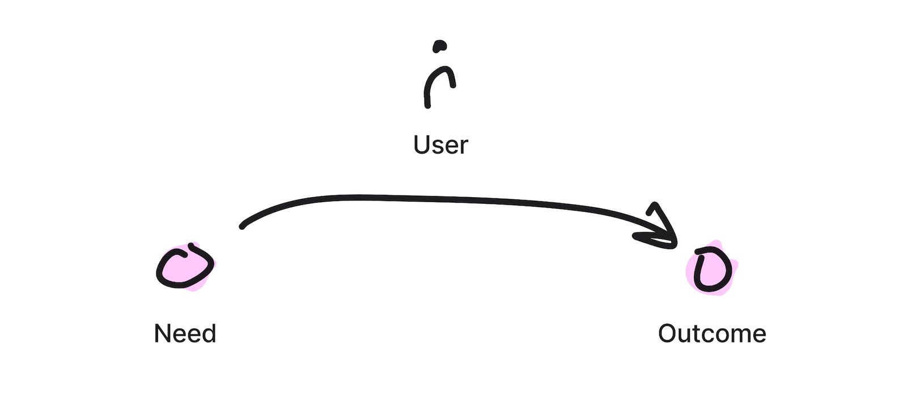
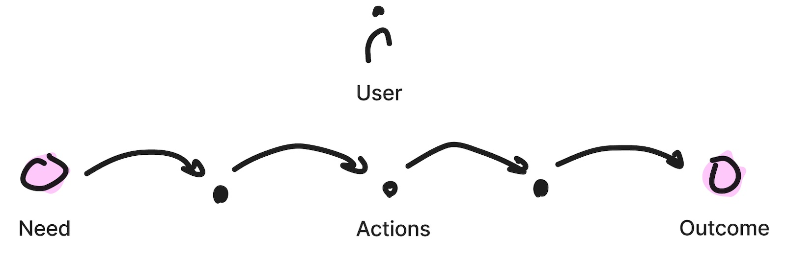

What - Building meaningful solutions
Solving Users Problems
Addressing Needs with Desirable Outcomes
Building solutions is about translating users' needs into desired outcomes, both for the user and your product, and
essentially to your business.

Mapping Your users' Needs
To understand what you need to build, you need to understand how users are currently getting their jobs done.
This can be done by for example journey-mapping, breadboarding or creating user flows. Whatever it may
be called, the key is to listen to your users, observe what they do and see it for yourself.
Going directly to the users help you both understand the journey the currently take, but also uncover the
painpoints in the process and feel the users' emotions as they navigate through their tasks.

Understanding the users journey in your own product will also help in building analyses on the users
journey, or funnel, through the product. Data on the user funnels help you identify potential improvement points,
and asking your users will give you insights on what may cause people not to proceed to the desired outcomes.
Listening to the user's language also helps you adjust your product to fit the users thinking and mental models.
Key Takeaways
Observe what users do and ask what they aspire to achieve. Build for what they need, not what they want.
Use quantitative data to understand the general behaviors of what users do. Use qualitative feedback from users to understand
why they do what they do and don't do. Address the user's need with a solution that is focused on achieving the desired outcome.
Measure how your solution leads to the desired outcomes.
Inspiration and Further Reading:
- Shape Up: Stop Running in Circles and Ship Work that Matters by Ryan Singer
- Continuous Discovery Habits by Teresea Torres
- Design for How People Think: Using Brain Science to Build Better Products by John Whalen
- Competing Against Luck: The Story of Innovation and Customer Choice by Clayton M. Christensen
- Change by Design: How Design Thinking Transforms Organizations and Inspires Innovation by Tim Brown